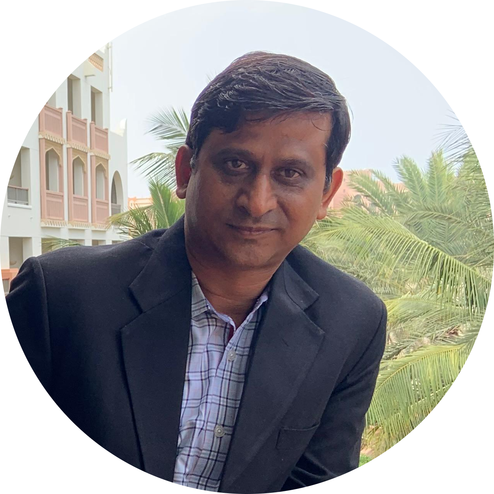

Precast & Plastics | Waste Management & Recycling | Process Engineering

Senior professional with 29+ years of experience in civil construction, precast, plastics, waste management, and technical services. Expert in business analysis, feasibility studies, market research, process engineering/reengineering, and renewable energy initiatives. Proven ability to streamline operations, drive cost savings, and deliver sustainable growth.
Amity University, Noida – 2010
Dr. B.A.M.U., Aurangabad – 1996
Delivered projects across Oman, Bahrain, UAE, Qatar, Kuwait, and India. Collaborated with professionals from 30+ nationalities. Ensured compliance with DIN, BS EN, ASTM, AWWA, ISO, FIDIC, and OHDS standards. Worked closely with KIWA, Bureau Veritas, and DNV for certification, audits, and quality assurance.
Achieved through process reengineering and lean manufacturing initiatives across multiple facilities
Delivered through innovative lightweight concrete block mix redesign and process optimization
Led sustainability initiatives reducing operational waste and enhancing environmental compliance
Successfully directed production planning for 7 plants achieving exceptional operational efficiency
Managed projects across UAE, Saudi Arabia, Qatar, Kuwait and other GCC markets
Led diverse teams of 150+ employees from 30+ different nationalities
Mobile: +968 95054051
Telephone: +968 22372948
ims-oman@outlook.com
Muscat, Oman / Bulandshahr, India
Open to Global Opportunities